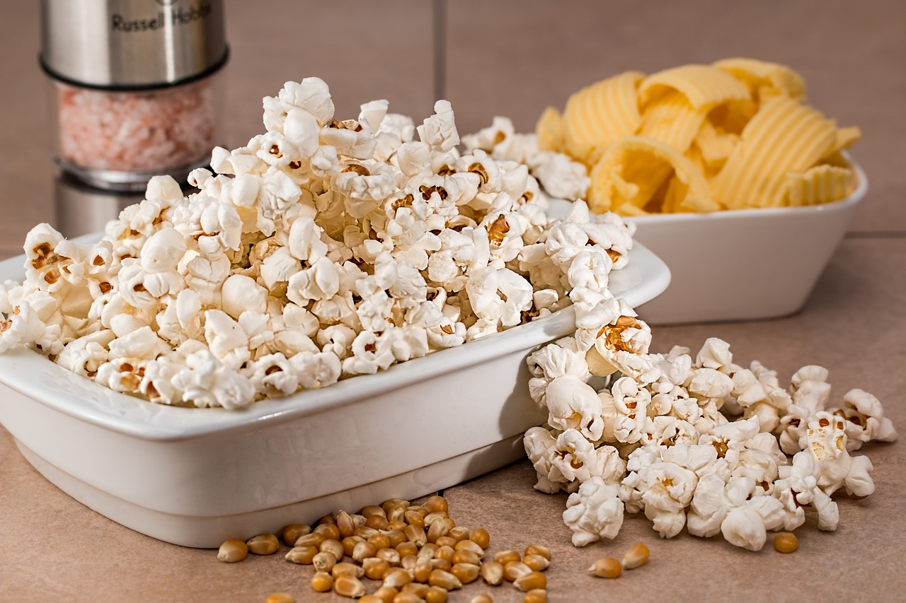

Stove Popped Popcorn
Description
This one is extremely easy! All you need is vegetable oil, salt, and popcorn kernals. That's it! Of course if you want to get fancy and add black pepper, replace the salt entirely with your choice of popcorn seasoning, or even get extra fancy and make caramel popcorn, that is entirely up to you. But if you're just looking for a simple delicious popcorn, three ingredients is all you need
So let's dive in!
Ingredients
- Popcorn kernals
- Vegetable oil
- Salt and/or other preferred seasonings
Steps
- Cover the bottom of a small pot generously with vegetable oil.
- Put the oil on medium heat and add 3-4 kernals to the pan.
- Puts some kernals in 1/4 to 1/2 measuring cup, depending on the size of the pot and the amount of oil in the pot for easy acacess.
- Chill or catch up on some stuff and listen out for the sound of a kernal popping.
- Once you hear a kernal pop, return to the stove and pour a single layer of kernals in the pot. The kernals should be barely emmersed in the oil.
- Let the kernals pop and shake the pan regularly as they do.
- Once the popping starts to slow down, immediately turn off the stove, remove the popcorn from the heat and carefully pour it into a serving bowl.
- Add your desired amount of salt and/or seasonings and enjoy!